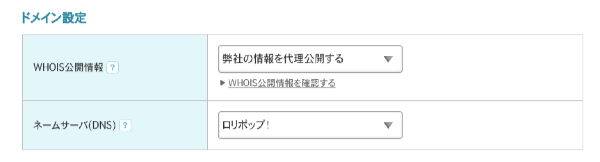
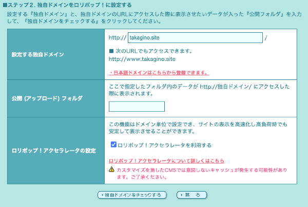
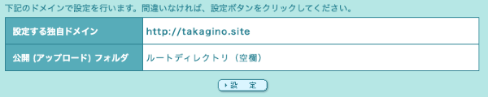
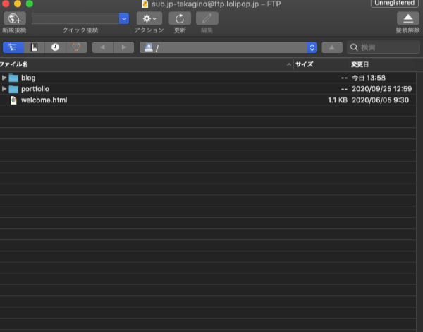
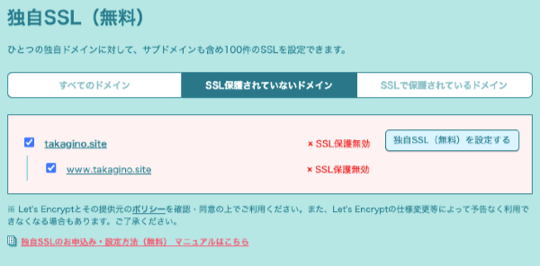
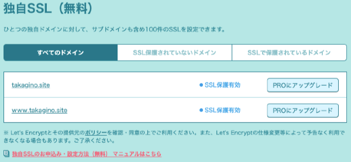
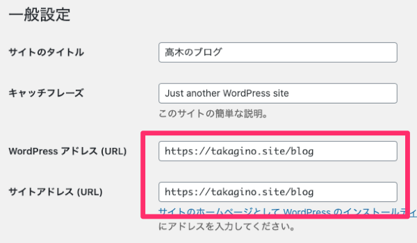

0. はじめに
以下の手順で進めても、エラーが出たり、最悪WordPressのインスールからやり直さないといけなくなる可能性もあります。不安な人は授業が始まってから学校で作業しましょう。
※なお、独自ドメインの設定が完了した人は、GmailかSlackで新しいURLを教えてください。
以下の手順で進めても、エラーが出たり、最悪WordPressのインスールからやり直さないといけなくなる可能性もあります。不安な人は授業が始まってから学校で作業しましょう。
※なお、独自ドメインの設定が完了した人は、GmailかSlackで新しいURLを教えてください。
後々面倒くさいので、先にムームードメインに登録しユーザー情報を入力しておくことをお勧めする。

※「ドメイン情報認証のお願い」のメールが届くので、必ず確認して指示に從って認証すること


※設定から反映までに３０分ほどかかるので、後述の「3. 独自SSLの導入」を参考に、無料SSLの設定をしておく。
サーバー上のどのフォルダに独自ドメインを適応させるかを設定します。

※特別な理由がない限り、この方法で設定しておくのが無難。


「https://独自ドメイン」の形式で自分のブログにアクセスすると、ページが見つからないか、CSS等が反映されない状態になると思います。
以下の手順でWordPress側のURLを修正します。
